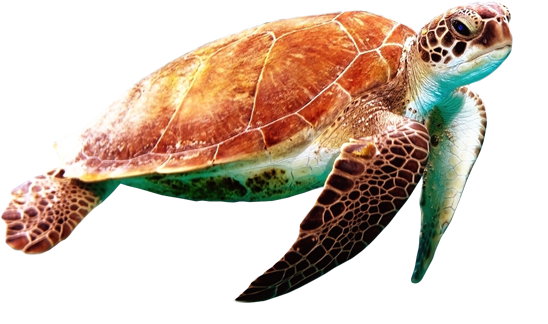
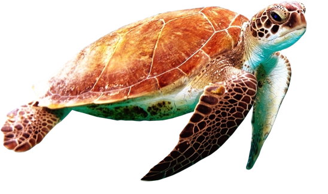

Green Sea Turtle
Cheloniidae and Dermochelyidae families
Seven different species of sea (or marine) turtles grace our ocean waters, from the shallow seagrass beds of the Indian Ocean, to the colorful reefs of the Coral Triangle and the sandy beaches of the Eastern Pacific. While these highly migratory species periodically come ashore to either bask or nest, sea turtles spend the bulk of their lives in the ocean. WWF's work on sea turtles focuses on five of those species: green, hawksbill, loggerhead, leatherback, and olive ridley.
Over the last 200 years, human activities have tipped the scales against the survival of these ancient mariners. Slaughtered for their eggs, meat, skin, and shells, sea turtles suffer from poaching and over-exploitation. They also face habitat destruction and accidental capture—known as bycatch—in fishing gear. Climate change has an impact on turtle nesting sites; it alters sand temperatures, which then affects the sex of hatchlings. Nearly all species of sea turtle are now classified as endangered, with three of the seven existing species being critically endangered.
 



STATUS:
ENDANGERED
POPULATION:
2 Million
HABITAT:
Open Water, Coasts
THREATS
HABITAT LOSS & FRAGMENTATION
Sea turtles are dependent on beaches for nesting. Uncontrolled coastal development, vehicle traffic on beaches, and other human activities have directly destroyed or disturbed sea turtle nesting beaches around the world. For example, lights from roads and buildings disorient hatchlings away from the sea, and vehicle traffic on beaches compacts the sand, making it impossible for female turtles to dig nests. Turtle feeding grounds such as coral reefs and seagrass beds are damaged and destroyed by activities onshore, including sedimentation from clearing of land and nutrient run-off from agriculture. Beach restoration projects for protecting seaside buildings have also been found to be harmful, through dredging and sand filling.
CLIMATE CHANGE & POLLUTION
All stages of a sea turtle's life are affected by environmental conditions such as temperature—even the sex of offspring. Unusually warm temperatures caused by climate change are disrupting the normal ratios, resulting in fewer male hatchlings.Warmer sea surface temperatures can also lead to the loss of important foraging grounds for sea turtles, while increasingly severe storms and sea level rise can destroy critical nesting beaches and damage nests.
Sea turtles can mistake floating plastic materials for jellyfish and can choke on them when they try to eat them. These encounters are often fatal. Lost or discarded fishing gear—called ghost gear—entangles sea turtles and can drown or render a turtle unable to feed or swim. Trash on beaches can trap hatchlings and prevent them from reaching the ocean. Oil spills also poison sea turtles of all ages.

How Can I Help?

Call Your Representatives
100 companies are responsible for 71% of global emissions. Urge your congresspeople to pass legislation preventing corporations from destroying our planet.

Reduce Your Footprint
Commit to reducing food waste, electricity use, and walk, bike, or take public transportation. Buy only what you need and recycle what you no longer do.
Donate
Companies like IUCN Red List & World Wildlife Fund are committed to protecting habitats threatened by Climate Change and the animals that live there.